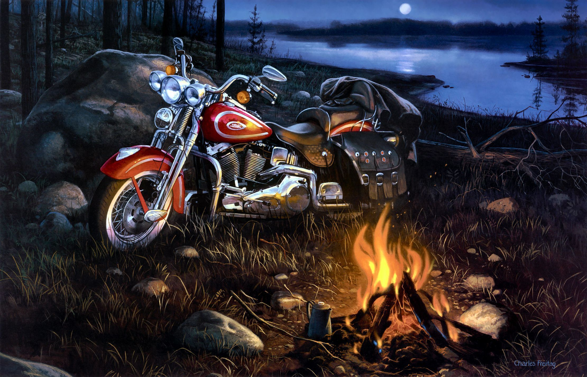
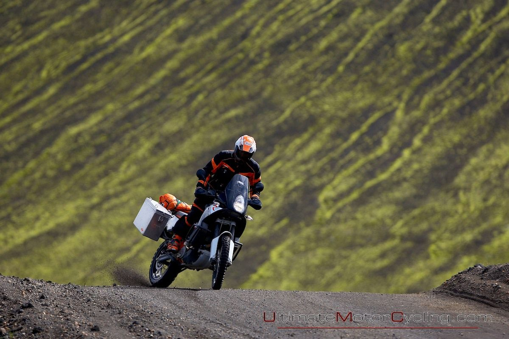
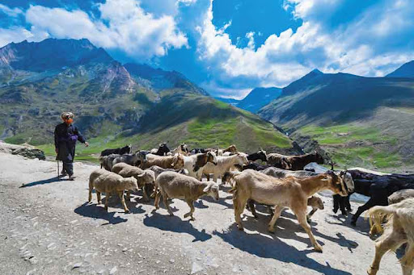
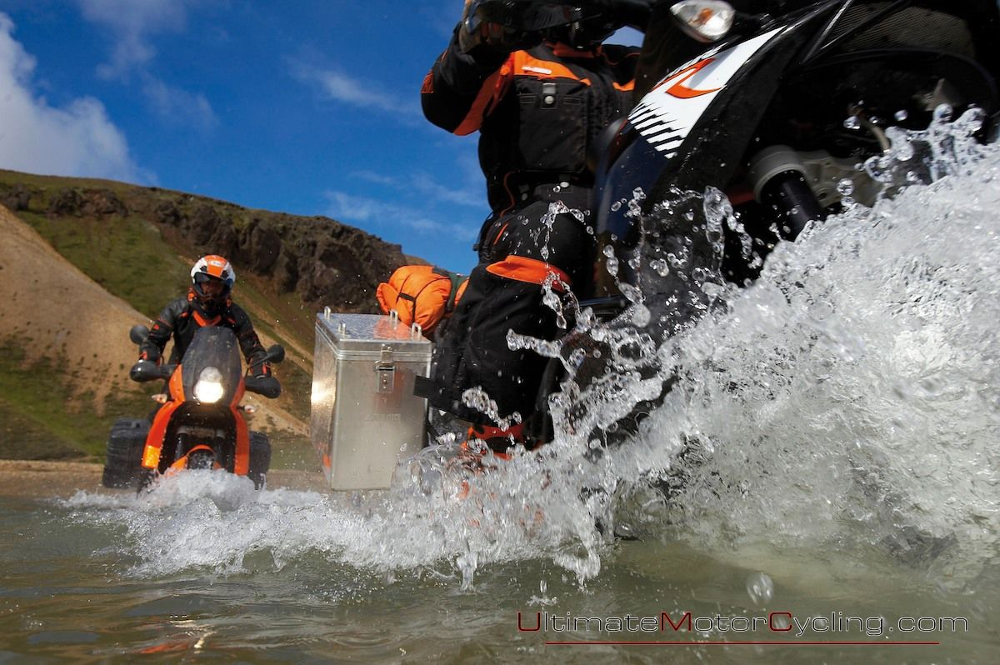
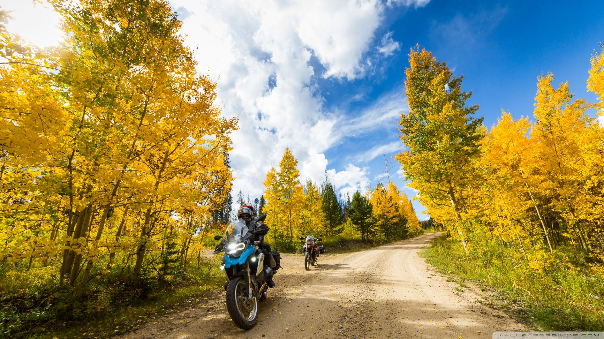

I liken motorcycle touring to roaming the Wild West; a cowboy riding his horse; carrying supplies, crossing states, finding a place to stay, soaking up the hospitality of a temporary home and then heading off next morning.
You can do that on a bike, your own self-contained travel unit.
There are riders out there who’ve never come home. Like the swallow staying airborne for years. The road has become their home.
Perhaps you just need a week or two, still a long time on the road but if you want to cross an ocean you’ll need to leave sight of the shore.
Despite high profile media coverage of this wonderful pastime you don’t actually need a massive bike with suspension-breaking loads to make a start.
Just like your debut into motorcycling, touring should be progressive giving you layers of experience to draw upon in this multi-disciplined activity.
There’s more to it than just a bike and putting several miles on the clock.
Things happen on long trips that don’t occur on short ones. If you don’t know what they are you could be in for some very big and expensive surprises.
But don’t worry; good planning and preparation will go a long way in keeping you safe and excited in the saddle.
Let’s take a look at some things to consider for long-distance, multi-day motorcycling.
Beginning with…you!
The Rider
Sitting still on a motorcycle for hours on end may not seem like an athletic feat but you need to be fit, healthy and alert to handle the challenges of long distance riding.
How is your mental and physical health?
Tiredness, anxiety and stress can result from being ill-prepared. What’s your longest ride so far? How did you feel? What did you learn?
Every day is memorable but they won’t always be good. The thrill and freedom of long distance motorcycle riding is often accompanied by obstacles and problems.
Treat these as part of the experience and deal with them methodically and as calmly as you can. Overcoming these challenges successfully is what shapes you and what you’re most likely to remember.
The Plan
Making a plan is exciting, fun and rewarding. It helps you see and feel your trip before it has even begun.
You can run it through your mind on the way to work in the days and weeks preceding your big journey.
Writing it and tweaking it gives you focus, removes doubt and allows you to handle unforeseen events and emergencies.
What’s in your plan?
The Route
Where are you going? If you’re starting your first long distance trip then it pays to explore your home country before embarking on a round the world tour.
Exploration isn’t just about the terrain but of yourself and your bike.
You need to know both very well before stretching any physical, psychological and mechanical limits when venturing many miles from home.
A route can be altered during your trip to include word-of-mouth recommendations such as new and interesting places. Having an initial outline greatly reduces time-wasting and allows you to plan accommodation more easily.
Perhaps you wish to visit shows, exhibitions or catch up with old friends or relatives along the way. Put the dates and places in your plan.
Where to stay?
A circuit of Britain’s motorways and Premier Inn’s may not be everyone’s idea of the spirit of motorcycle touring especially if you wish to be more at one with nature.
An inclusion of country roads, green lanes and open countryside may be preferable over inter-city satnav guidance.
If you pre-book your accommodation you generally have to… be there.
Others may wish for the flexibility and freedom of just pulling up to a roadside B&B and chancing their arm.
Of course if that doesn’t work then carrying a decent tent is a good idea and a great deal of fun.
You should be fairly flexible about accommodation for a more diverse experience but overnight security is a must. Make sure the price of a goodnight’s sleep isn’t your motorcycle.

Your Wheels
Years ago it was a case of adapting powerful bikes to carry luggage. Today, several manufacturers produce purpose-built long distance touring bikes across many different engine sizes and specifications.
There’s even a magazine dedicated to adventure bike touring. Bigger bikes endure less stress but smaller machines are also very capable.
If you wish to tour on the bike you already own then consider it’s suitability for your trip. Can it safely accommodate extra loads?
Pannier systems and luggage racks are popular and custom ‘saddlebags’ may also suffice.
Recommended Reading:
- Guide to the best motorcycle saddlebags
- Guide to the best motorcycle top boxes
- Guide to the best motorcycle tank bags
Just avoid any DIY contraptions or excessively heavy back-packs which can make your bike unstable.
A fully, evenly-loaded tour bike is like carrying a passenger. Make practice runs with increasing loads and adapt to any changes in breaking, accelerating and balance.
The Weather
The heat and the cold will have a greater effect on your body when it’s exposed to prolonged riding. Rainwater will find its way through substandard clothing or gaps in your outfit.
Test all of your gear with practice runs and see how it holds up over longer durations.
Recommended Reading:
Allow for hot, freezing, wet and dry conditions. It’s often harder to warm up rather than cool down so carry a spare set of warm clothes for emergencies.
Riding Techniques
Prolonged riding may induce tension and pain not unlike those experienced from sitting at your PC all day long. Regular breaks for stretching and flexing helps avoid cramping and stiffness. There are also a few ‘on-board’ exercises you can carry out on the move.
Treat your body like a mobile phone battery when riding long distances.
Don’t just run it down until there’s little left; keep it energised by resting, eating and drinking properly and regularly.

Multi-day riding means dealing with whatever the road will throw at you.
Chickens, sheep, goats, horses, birds, fallen trees, oil, sand, mud and flying insects spring up like hazards on a video game.
Are your reflexes sharp enough to avoid the worst?

Treat the long journey with respect. Each leg is like a flight. Do your checks; bike, load, route and self.
Is everything fastened, secure and are you alert and ready?
Navigation
Reduce unnecessary stops by checking your route each morning. Use normal breaks to monitor progress.
Good referencing of your maps, GPS and the road signs will keep you on target. Don’t be afraid to change your plan.
If you’re lost then admit it and stop. In the grand scheme of things you won’t have deviated much and perhaps you’ll have learned a lesson.
There’s a great selection of GPS devices for motorcycles.
Blue Tooth options allow you a hands-free, voice-activated mobile phone connection, rider to rider communication and music.
Add a couple of Go Pro cameras to your helmet or bike and record those memorable moments on the road.
Recommended Reading:
- Guide to the best motorcycle helmet cameras
- Guide to the best motorcycle intercoms
- Guide to the best motorcycle sat navs

Emergency Planning
Where am I?
What’s the worst that can happen?
What am I carrying?
How can I fix it?
The further away from civilization you are then the more care you should devote to contingency planning.
Fuel, for example, may be hard to get in the back of beyond. Know your bike’s range.
Always carry a good first-aid kit and have some means of communication like a sat phone or simple mobile. These won’t detract from your sense of one-ness with nature; you can turn them off when not in use, but resources like these can save lives.
Tell others where you’re going and when you’ll be there.
Maybe post the odd update on social media just to let the outside world that you haven’t left for the big bike show in the sky.
Some prefer to go the whole hog and dedicate an interactive website covering each and every day of their journey. Motorcycle trips are perfect material for this.
Documentation and shipping
When taking your bike abroad it’s not just you that needs a passport. Your motorcycle also requires documentation. ‘Bike passports’ vary from place to place but for lengthy, multi-country riding outside the UK and Europe you’ll invariably need a Carnet du Passage or ‘Tryptics’ as they’re affectionately known.
You can find up to date information on the countries where a Tryptic is required here.
You can often buy temporary insurance when crossing borders although it may pay to upgrade your existing policy for international cover.
For long-haul travel you may wish to ship or fly your bike to the starting point of your trip. A number of specialist agencies exist to make this process as simple and as cheap as possible.
How much?
Your plan must include a realistic budget.
Allow for unexpected mechanical breakdowns involving costly parts and repairs. If you’re travelling around the UK then you’ll likely have an idea of daily food and accommodation costs. Otherwise, research the areas you intend to visit.
Figure out your mileage, fuel consumption and factor in any ferry tickets, toll gates or other road fees.
If you’re the type who can sleep in a tent, cook your own food and wash in a river then your major outgoings will only be fuel and basic food.
It’s possible to stay on the road for weeks on end spending barely more than a few hundred pounds.

Get a piece of paper, a pen and visualize yourself riding around Britain. Write down every possible item of expense and add a 50% excess. If all goes to plan you’ll return with plenty to buy some new tires and an oil change.
Research
The internet is awash with motorcycle travel stories involving every motorcycle in existence.
Read or watch how others load and ride their machines. See what they wear, where they go and how they eat, sleep and film their way around the 195 countries of the world.
Just Do It
Rome wasn’t built in a day. Why not just dress up warmly, fill your backpack and plan a one-day journey? You can start early morning and return at night.
You’ll have covered a few hundred miles, learnt to live on the road for a while and more importantly… got the bug.
A word of warning
Long distance tour riding is addictive. There is no cure.
Help is never far away and you’ll be among like-minded people. Don’t worry if you can’t always get a good dose of international travel; a quick fix is never far away with a bike, a backpack and a full tank of fuel.